SA — Saudi Arabia
The main impact of a 200 basis-point (2.00 percentage-point) rise in United States interest rates on Saudi Arabia is a 0.14% drop in GDP by the 14th quarter — a modest spillover, not a severe hit. This is the fourth-largest absolute GDP response in the panel, but the magnitude stays small: the shock transmits mainly through tighter global financial conditions and a firmer dollar, and Saudi Arabia's peg and hydrocarbon-linked fiscal cushion keep the real-economy damage contained. The path builds slowly — essentially nothing in Q1 (−0.001%), then a steady widening to the Q14 trough of −0.137% of GDP — and it has not faded by Q20, where GDP is still 0.096% below baseline. This is a persistent level effect, not a temporary dip.
Demand and trade. Household consumption (Consumption) falls to −0.081% by Q8, recovers sharply to −0.029% in Q9, then drifts back down to −0.058% by Q20 — a lumpy profile that reflects the interaction of higher borrowing costs with the policy-rate response. Private investment (Investment) is hit much harder, peaking at −1.93% in Q8 as the cost of capital rises, then decaying to −0.38% by Q20. Net exports (the trade balance) deteriorate to −0.173% by Q13 and remain at −0.108% in Q20, so the external account is a persistent drag rather than a one-off. Government spending (Gov Spending) barely moves — a peak decline of just −0.024% in Q12, turning negative only from Q3 — and government debt (Gov Debt) falls steadily to −0.197% by Q20, consistent with a smaller nominal economy and softer revenue.
External / FX. The real exchange rate (Currency Strength) depreciates to −0.551% by Q14 and stays near −0.497% at Q20. That is a real depreciation, which should normally support competitiveness — yet net exports still worsen. The reason is that the trade balance is being dragged by weaker domestic and global demand rather than by price competitiveness, so the currency move and the NX path point in opposite directions in terms of what they imply for tradables.
Labour. Employment falls to −0.125% by Q18 and is still −0.121% below baseline at Q20, tracking the output path with a lag. Unemployment rises by 0.050 percentage points, peaking in Q17, and remains 0.047 points above baseline at Q20. Real wages decline steadily to −0.173% by Q20 — the largest labour-market effect — as weaker labour demand and softer inflation erode real compensation.
Prices. CPI inflation falls by 0.026 percentage points at its Q9 trough and has mostly faded by Q17, ending at −0.001 points in Q20. Domestic inflation follows a similar arc, peaking at −0.018 points in Q9 and fading by Q17. Firms' marginal cost declines to −0.082% by Q14 and remains −0.058% below baseline at Q20, so the disinflationary impulse is real but small in absolute terms.
Financial conditions. The local policy rate rises to 1.168 percentage points by Q8, then unwinds to 0.080 points by Q20 — a substantial but temporary tightening. Government bond prices (Bond Price) fall 5.84% at the Q8 trough, the largest single response in the model, before recovering to −0.40% by Q20. The 2-year government yield rises 0.778 points at Q5, the 5-year yield 0.435 points at Q2, and the 10-year yield 0.225 points at Q1 — a classic inverted response where the front end moves most and the long end barely budges. Equity prices fall 0.588% at Q13 and remain −0.391% below baseline at Q20. Tobin's Q drops 1.354% at Q8, house prices decline 0.244% by Q19, bank credit contracts 0.011% by Q18, and lending spreads widen by a negligible 0.0002 percentage points — so credit conditions tighten only marginally.
Sectoral and capital. Services GDP falls 0.060% at Q14 and stays −0.042% below baseline at Q20. Manufacturing GDP actually rises, peaking at +0.151% in Q14 and holding +0.137% at Q20 — the one sector that benefits, likely from the real depreciation and reallocation effects. The capital stock declines steadily to −0.087% by Q20, reflecting the cumulative investment shortfall.
Timing. The GDP hit is largest in Q14 at −0.137% and has not faded by Q20, where it remains −0.096%. The equity trough is Q13, the bond-price trough Q8, and the investment trough Q8. The shock builds for roughly three and a half years and then plateaus rather than reversing.
Close. These are model impulse responses relative to baseline, not forecasts. They describe how a 200bp US rate rise propagates through Saudi Arabia under the model's assumed transmission channels — a modest, persistent drag concentrated in investment, bond prices, and the external account, with manufacturing as the sole offsetting sector. Number check vs JSON: GDP peak -0.14%, CPI 3y -0.18pp, equity peak -0.59%.
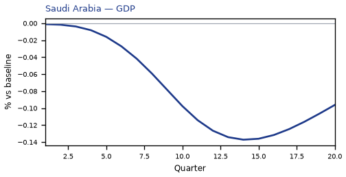
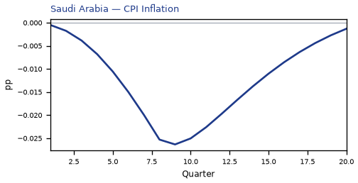
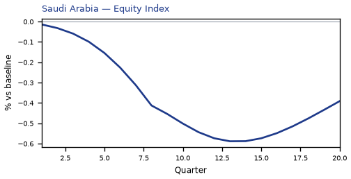
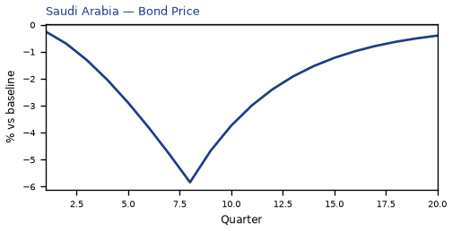
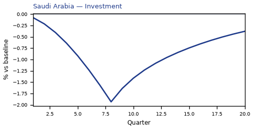
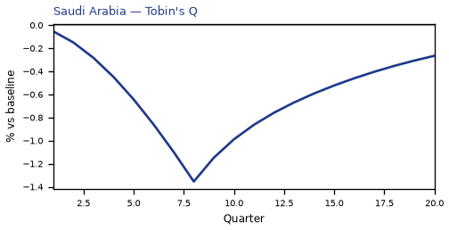

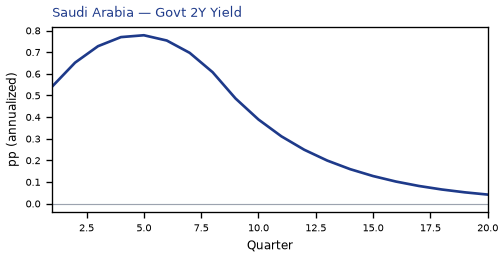
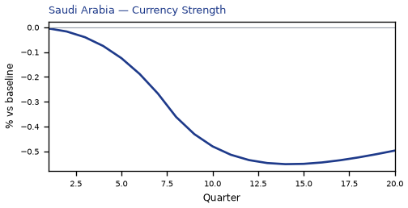
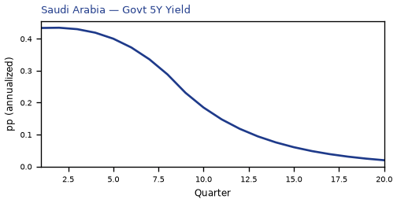
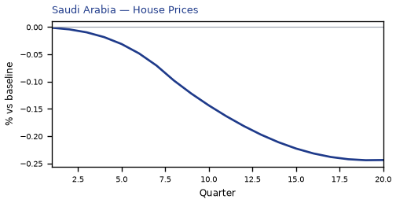
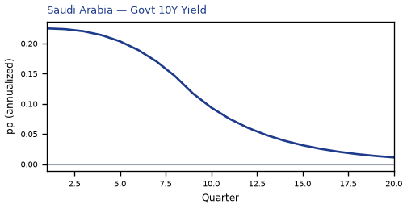
source=live · global_macro_v5 · contract v6 · Q1–Q20 JSON · not financial advice